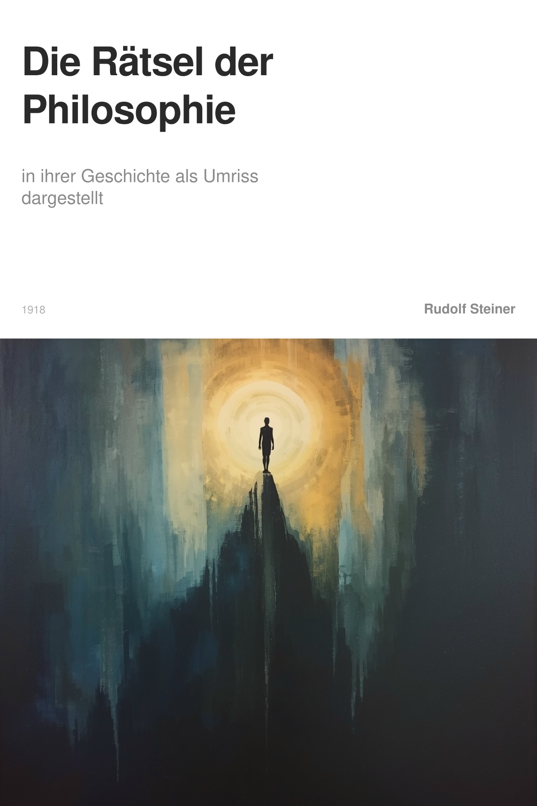
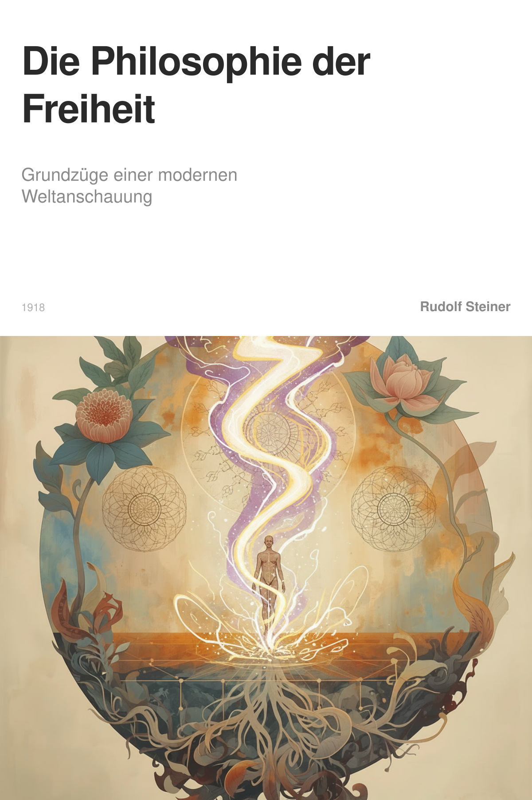

Michael Schmidt
Erkläre mir bitte die moralische Intuition im Vergleich zu normalem Denken
Philo von Freisinn
# Moralische Intuition und normales Denken
Um den Unterschied zu verstehen, muss man zunächst klären, was unter „normalem Denken“ zu verstehen ist und was unter „Intuition“.
Das normale Denken
Das gewöhnliche, alltägliche Denken ist eine Tätigkeit, bei der der Mensch Vorstellungen bildet, Schlüsse zieht und Urteile fällt. Es bezieht sich auf Wahrnehmungen und ordnet diese begrifflich ein. Dieses Denken ist reflexiv: Es arbeitet mit bereits gegebenen Inhalten, vergleicht, unterscheidet und folgert. Es ist das Denken, das wir in der Schule lernen und im Beruf anwenden.
Die Intuition
Die Intuition ist etwas grundlegend anderes. Sie ist nach Rudolf Steiner die höchste Form der Erkenntnis, bei der der Mensch nicht nur über etwas nachdenkt, sondern unmittelbar und aktiv in eine geistige Wirklichkeit eintritt (Quelle 17: Liste von Begriffen). Sie ist kein passives Empfangen von Einfällen, sondern eine willentliche, innere Geistbetätigung. Der Mensch versetzt sich als Wahrnehmender in das Wesen der Sache selbst.
Steiner weist darauf hin, dass die Intuition in der Wissenschaft oft geringgeschätzt wird. Man hält sie für einen glücklichen Einfall, der nachträglich erst bewiesen werden müsse (Quelle 6: Grundlinien einer Erkenntnistheorie der Goetheschen Weltanschauung). Steiner hingegen sieht in der Intuition ein eigenständiges Prinzip der Erkenntnis.
Die moralische Intuition
Die moralische Intuition ist nun die Anwendung dieser Erkenntnisform auf das sittliche Handeln. Sie ist die Fähigkeit, unmittelbar zu erfassen, was in einer konkreten Situation zu tun ist – nicht durch Anwendung einer allgemeinen Regel oder eines Gebotes, sondern aus einem inneren, schöpferischen Erfassen der Situation heraus.
Steiner formuliert es so: Aus individuellen ethischen Intuitionen entspringt alle sittliche Betätigung der Menschheit (Quelle 19: Die Philosophie der Freiheit). Der Mensch ist als sittlich Denkender zugleich Schaffender. Aus seinem Denken entspringen als neue Schöpfungen sittliche Ideen (Quelle 20: Methodische Grundlagen der Anthroposophie).
Der entscheidende Unterschied
Der Unterschied liegt in folgendem:
1. Normales Denken arbeitet mit gegebenen Begriffen und Regeln. Es wendet an, was schon da ist. Ein moralisches Urteil im normalen Denken würde lauten: „Diese Handlung fällt unter das Gebot der Nächstenliebe, also ist sie gut.“
2. Moralische Intuition hingegen schafft die sittliche Erkenntnis aus dem Augenblick heraus. Sie folgt keinem vorgegebenen Gebot, sondern erfasst unmittelbar, was in dieser besonderen Situation das Richtige ist.
Steiner verdeutlicht dies am Beispiel der Liebe: Ich liebe meinen Nächsten nicht, weil ein Gebot der Nächstenliebe existiert, sondern weil mich mein Ich zum Nächsten hinzieht. Ich soll ihn nicht lieben; ich will ihn lieben (Quelle 2: Die Rätsel der Philosophie). Die moralische Intuition entspringt also einem inneren Impuls, nicht einer äußeren Vorschrift.
Die praktische Bedeutung
Die moralische Intuition ist die Grundlage für ein wirklich freies Handeln. Wer nur nach Geboten handelt, ist nicht frei, sondern unterwirft sich einer äußeren Autorität. Wer aus Intuition handelt, folgt seiner eigenen, in der Situation neu geschöpften Einsicht. Das setzt voraus, dass der Mensch fähig ist, seine eigenen Impulse so zu entwickeln, dass sie nicht willkürlich, sondern aus einer tieferen Erkenntnis der Wirklichkeit kommen.
Steiner ist überzeugt: Wenn die Menschen sich selbst überlassen sind, wird das Moralische ebenso das Herrschende sein wie in der Natur das Gesunde (Quelle 3: Die Rätsel der Philosophie). Er glaubt an den sittlichen Adel der Menschennatur, an die freie Entwicklung der Moralität aus den Individuen heraus (Quelle 3: Die Rätsel der Philosophie).
Die moralische Intuition ist also kein Ersatz für das normale Denken, sondern dessen Steigerung und Vertiefung. Sie ist das Denken, das nicht mehr nur über die Dinge nachdenkt, sondern in ihnen lebt und aus diesem Leben heraus handelt.
[1] LUDWIG BÜCHNER
LUDWIG BÜCHNER
[2] E. DAS NATURERKENNEN
E. DAS NATURERKENNEN
[3]
DER MODERNE MENSCH UND SEINE WELTANSCHAUUNG
[4]intuition
Intuition
Im Sinne Rudolf Steiners bezeichnet Intuition die höchste Stufe eines bewussten Erkenntnisaktes. Sie ist jenes Denkerlebnis, in dem das denkende Bewusstsein vollständig in den zu erkennenden Inhalt eintaucht und ihn dadurch von innen her, in seiner Wesenheit, erfassen kann. Dies steht im Gegensatz zu einer bloß äußerlichen Betrachtung oder einer Verknüpfung von abstrakten Begriffen.
Der Weg zu dieser intuitiven Erkenntnis wird notwendig, weil die unmittelbare Wahrnehmungswelt für sich genommen nur einen Schein darstellt – eine durch unsere Organisation bedingte Mannigfaltigkeit. Das gewöhnliche, beobachtende Denken zerstört diesen Schein, indem es die einzelnen Wahrnehmungen in das Netz der Begriffswelt einspannt und sie so in einen größeren Zusammenhang stellt. Doch erst in der Intuition vollendet sich dieser Prozess. Hier gliedert das Denken unsere individuelle Existenz unmittelbar in das Leben des Kosmos ein. Die Einheit der objektiven Begriffswelt nimmt nun auch den Inhalt unserer subjektiven Persönlichkeit in sich auf.
In diesem intuitiven Akt findet der Mensch seine in sich geschlossene Totalexistenz im Universum. Er erlebt, wie sich in seinem Innersten, im Subjektiven, das eigentlichste und tiefste Objektive offenbart. Wahrheit entsteht nach dieser Auffassung nicht durch das Trennen von Subjekt und Objekt, sondern genau durch deren Durchdringung im Erkenntnisprozess: Die Idee, die aus der inneren Tätigkeit des Denkens stammt, verbindet sich mit der äußeren Wahrnehmung zu einer lebendigen Einheit. Damit wird die Intuition zum Mittel der Erkenntnis des Wirklichen gegenüber dem bloßen Schein der Wahrnehmung, was zu allen Zeiten das Ziel des menschlichen Denkens bildete. Sie ist der Punkt, an dem das Denken selbst als Wirklichkeit erfahren wird und den Menschen in die wahre, geistige Wirklichkeit führt.
[5]
[6]DIE RADIKALEN WELTANSCHAUUNGEN
[7]DIE RADIKALEN WELTANSCHAUUNGEN
[8]